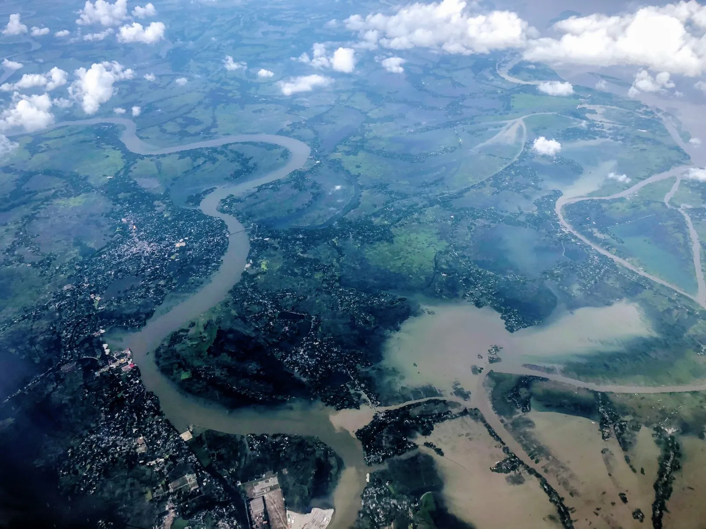

Home/About
About
Bangladesh and Japan, working together.
REVIVAL MADE brings two ways of making in Bangladesh to brands and designers abroad: the scale of partner factories, and the skill of women artisans.

Revival.
Revival is a Bangladesh–Japan initiative that has worked with women artisans to turn traditional handcraft into paid work.
REVIVAL MADE opens that work to brands and designers abroad, and adds a partner factory line for production runs.
Who does what
Clear roles.


Start small
Start with a sample.
Send us your idea. We tell you which line fits, what the sample costs and how long it takes — before you commit to a production order.